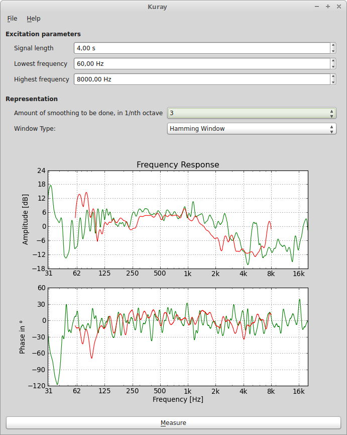

Kuray
Kuray is a cross-platform application for measuring audio systems. With it, you can obtain amplitude and phase responses from a loudspeaker.
Installation
Clone the repository, and then simply execute python kuray.py
from the main directory.
Documentation
Have a look at the documentation here.
Contribute to Kuray
We want to make it as easy as possible for people to get involved with Kurays development. For possible ideas, look here.
Mailing List
If you have any questions about, want to contribute to, or simply discuss Kuray, write to our Mailing List
License
Kuray is licensed under the BSD License. See the LICENSE file for details.